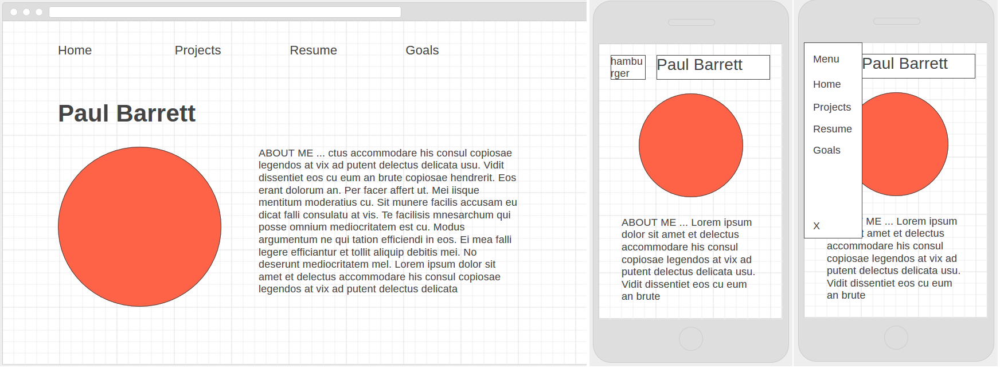

I began working on this website shortly before the summer of 2018. I discovered that web design was something that interested me after visiting sites like Stripe and Flip and become inspired by the simple but well-thought-out and intriguing design and functionality. I decided that I wanted to create my own starter website and created a set of goals I hoped to achieve in the process:
I went into this project with a plan of what I wanted the website to look like, thanks mostly to the lessons that I learned in the class I was taking at the time, CS498: Software Engineering for Senior Project, which is the precursor to the class I am currently taking. Wireframing was one of the many things taught, which I decided would be a valuable tool for getting an idea of what I wanted my website to look like. These are the initial wireframe designs I created:
After designing the general look of my website, I took to familiarizing myself with CSS grid; some of this process can be seen at my practicerepository. I then took to configuring the basic layout of the grid. With a lot of trial and error I successfully formatted the layout. This was one of the major hurdles, after, I was able to relatively quickly fill the website with content.
Besides working with CSS grid as a novice, I encountered many other obstacles. One of the most frustrating was positioning the Github and LinkedIn buttons correctly at the bottom of the page. I had to constantly readjust the grid parameters to reposition them. I plan to rework the grid soon to make everything more robust soon due to small issues like these. Another challenge was making everything responsive. Though the website view would look fine, elements would be rearranged and mixed on mobile. I corrected this by disabling grid on mobile view, which fixed most of the issues I was having.
This very much has been a learning process. Through the difficulties, I have only become more inspired at the superb demonstration of web design of others and will continue to strive towards gaining that level of skill. The final outcome is still undetermined as I am still working on and adding to this website!